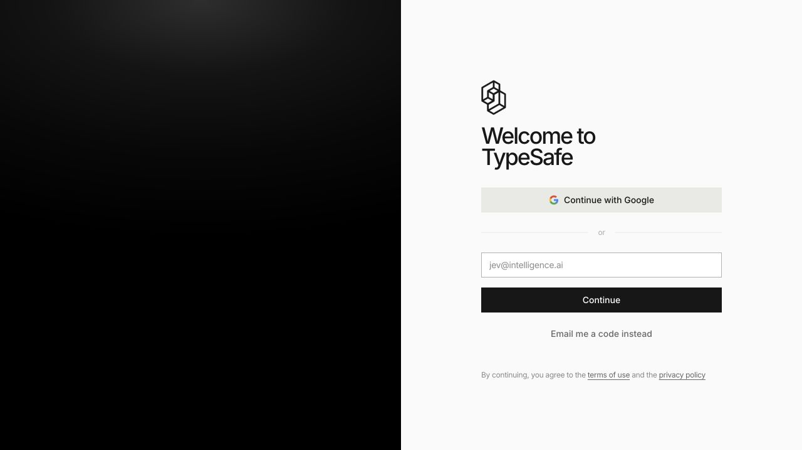

JEV — 文章を書かないAI
結論: JEVは会話するAIではなく、判断するAIです。ふわっとした入力を、プログラムが使える形（選択・点数・確率）で返します。
何が違うのか
| 普通のチャットAI | JEV | |
|---|---|---|
| 返すもの | 文章 | 選択・点数・確率 |
| 速さ | 数秒 | 0.1秒〜 |
| 用途 | 書く・考える・調べる | 仕分ける・ゲートする・判定する |
| 使い方 | 人が読む | プログラムがそのまま使う |
たとえるなら、文章を書く秘書ではなく、信号機です。「進んでよい／止まれ」を確率付きで即座に返す。だから何百回呼んでも速く、安く済みます。
なぜ合宿で扱うのか
作ったシステムを「自動で動く」ものにしようとすると、必ず小さな判断を大量にやる必要が出ます。どの担当に渡すか、これは緊急か、この内容は外に出してよいか。これを毎回チャットAIに聞くと、遅くて高くつきます。
JEVはそこを担当します。判断をAIに、決めることを人間に。これが、作ったシステムが自分で回り始める境目です。
Xでの話題（第三者の投稿）
参考として、Xでどう扱われているかを並べます。内容は第三者の主張で、正確性は未確認です。
| 投稿 | 言われていること |
|---|---|
| 2026-09-18 の投稿 | 「文章を書かないAI」として紹介され、必要な情報の仕分けとトークン削減に触れている |
| 2026-09-17 の投稿 | ユースケースの一覧: モデルの振り分け／tool選択／実行前ゲート／分類・緊急度付／リランク など |
| 2026-09-19 の投稿 | エージェント構成の一部として組み込んだ実践報告 |
公式: typesafe.ai ／ System One Models & Jev の発表 ／ Docs ／ @typesafeai
公式サイトでは「193.6倍速く、444.6倍安い」「10億入力トークンあたり$42」といった提供元の主張が掲載されています。条件の違う比較なので、数字は自分の用途で確かめてください。
APIキーの取り方（各社で取得）
合宿用の共通キーは配りません。自社のアカウントとして取得してください。所要5分です。
-
公式サイトを開く
https://typesafe.ai を開き、右上の
Sign Inを押します。 -
サインインする
Continue with Google、またはメールアドレスを入れてContinue。メールの場合は確認コードが届きます（Email me a code insteadでコード方式も選べます）。
サインイン画面（ console.typesafe.ai/login）会社のアカウントで入ってください。個人のGoogleアカウントで入ると、あとで引き継げなくなります。
-
コンソールでAPIキーを発行する
サインイン後の管理画面で、APIキーを新規作成します。表示は一度だけのことが多いので、その場でコピーしてください。
ここに画像: 管理画面でAPIキーを発行する画面（台帳#25）キーが写るので、撮影時は値を隠す -
キーを安全な場所に置く
キーをチャット・コード・コミットに書かないでください。置き場所は次のどちらかです。
置き場所 いつ使うか 環境変数 JEV_API_KEYアプリやスクリプトから使うとき ホームの設定ファイル ~/.config/typesafe/api-key手元のエージェントから使うとき キットには登録用のスクリプトがあります。値は画面に出ず、そのまま保存されます。
cd kit python3 tools/jev-configure.py -
1回呼んでみる
キーが入ったら、エージェントにこう頼みます。
jev-guideで、JEVが呼べるか確認してここに画像: JEVの型つき応答（台帳#21）確率付きの答えが返れば成功
注意
| やらないこと | 理由 |
|---|---|
| キーをチャットに貼る | 会話ログに残ります |
| キーをコードに直書きする | gitの履歴に残ります |
| スクリーンショットにキーを写す | 資料として配布されます |